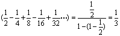
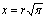

古希臘三大幾何難題 江銘輝 五夢網
西元前五世紀，希臘雅典城內，出現一個研究各方面學問的詭辯學派，他們第一次提出並研究在直尺和圓規的作圖工具限制下，只用有限次數繪圖步驟求出下面三個作圖題目（如圖1）：
1.三等分任意角問題：給出任意一個角θ，求作一角等於。
2.立方倍積問題：求作一立方體，使其體積等於已知立方體體積的二倍。
3.化圓為方問題：求作一正方形，使其面積等於一已知圓的面積。
這就是數學史上著名的古希臘幾何三大難題。
從表面上看，這三個問題都很簡單，似乎很容易在有限次數下，用直尺和圓規作圖來完成。因此兩千多年來吸引成千上萬的人，前仆後繼努力不停的研究。但始終無法成功。1637年笛卡爾（R. Descartes）因研究此難題而創立了解析幾何，又經過兩百年，1837年王采爾（P.L. Wantzel）在研究阿貝爾（N.H. Abel）（圖2）定理時，第一個嚴格證明了三等分任意角和立方倍積問題，不可能用直尺和圓規作圖來解決。
最後，克萊因（F. Klein）在1895年“德國數理教學改進社”開會時給出了希臘幾何三大問題皆不可能用尺規來作圖的簡單而明晰的證明，從而使兩千年未得解決的懸案告一段落。
壹：三等分任意角問題
一、源由
只允許使用直尺和圓規，將一個任意角兩等分是輕易舉的。人們很容易連想到若只准用直尺與圓規，能不能也將一個任意角3等分呢？將一個角由2等分到3等分，僅僅這麼一點
小小的變化，一個平淡無奇的幾何作圖題，變成了一座高深莫測的數學迷宮，也成為古希臘三大幾何問題之首。
二、為什麼三等分任意角不能在有限次數用直尺和圓規作出呢？
要證明這個問題，我們首先討論將三等分任意角化成 4x3-3x-cos3θ=0 之問題。如圖3，假設任意的角為∠XOY，以其頂點O為中心畫圓，設與OX，OY分別交於點A，點B。又設E為從B至OA的垂線的垂足。已知 ∠XOY 為已知角，OB=1則：
OE=cos3θ
設∠XOY 的3等分線與此圓的交點從靠近A點數起依次為C、D，從C至OX垂線的垂足為F。若知道OF=x的長度，即能劃出∠XOY 的3等分線。
若設∠XOY =3θ，∠XOC =θ
則cos3θ=OE;cosθ=x。
若將其代入於三角學的3倍角公式
cos3θ=4cos3θ-3cosθ，
即得cos3θ=4x3-3x
亦即4x3-3x-cos3θ=0
因此3等分任意角的問題，等於對任意的，找出滿足此方程式之x的問題。在回答上述問題時，我們先知道下列的定理。
定理A：若”有理係數3次方程式” 沒有”有理數解”，則此方程式就沒有能以直尺及圓規作圖的解。
因此，若想證明不可能用直尺及圓規把任意角3等分，則只要證明對於有理數cos3θ的某值來說，
3次方程式 4x3-3x-cos3θ=0 不具有有理數解即可。
也就是說我們只要舉出一個例子，譬如證明存在已知的角為60°，且cos3θ=1/2 時，3次方方程式
4x3-3x-1/2=0……………………(1)
沒有有理數解，則根據“定理A”，等於證明了不可能用直尺及圓規把60度這個角3等分。由此可證明任意角（至少是60度角）不能用直尺及圓規來三等分。
現以2x＝y代入方程式(1)，可得較簡單的形式：y3-3y-1=0
根據代數方程式求根的知識，如果有y3-3y-1=0“有理根”，則不外是±1。經逐一代入驗算後，均不符合，可見此方程式沒有“有理根”，亦即60度角不能用直尺和圓規三等分任意角。
注意“定理A”是指p、q、r是有理數的情況，當cos3θ值為無理數時如則"θ"=30° 或 45° ”定理A”就不再適用。
三、跳出尺、規及有限次數限制之三等分任意角的作圖方法
古希臘和後代的人在不受直尺、圓規或有限作圖步驟的限制下，已取得輝煌成就，他們的成果如下：
1.作法一：古希臘數學家及物理學家阿基米德（Archimedes，古希臘人，西元前287～212年）的三等分任意角。（阿基米德將直尺一邊劃上“點”的作圖方法）
2.作法二：利用阿基米德螺線求三等分任意角。
3.作法三：利用歐幾里德無窮級數方法，先把一個已知角二等分、四等分、八等分……等分，再利用
求出三等分任意角。
4.作法四：利用尼科梅德斯（Nicomedes，希臘人，西元前250年）的蚌線。
5.作法五：利用希皮亞斯（Hippias of Elis，希臘人，西元前400年）的割圓曲線。
6.作法六：帕斯卡（B. Pascal，法國人，西元1623～1662年）利用蚶線之方法。
7.作法七：玫瑰線方法。
貳：立方倍積問題
一、源由：
偉大科學家厄拉托西尼（Eratosthenes，古希臘人，西元前276年）記載兩則有關立方倍積問題的傳說，這個傳說如下：
1.第羅斯問題：
立方倍積問題也叫第羅斯問題。傳說愛琴海中第羅斯（Delos）島上發生瘟疫，人們就去阿波羅神廟向阿波羅神祈求去除瘟疫。廟祝說奉神諭：要去除瘟疫，須要把阿波羅神殿前方的立方體祭壇的體積擴大一倍。第羅斯人搞錯了，他們把祭壇每邊放大一倍。瘟疫不但沒有停止，同時更加嚴重。第羅斯人又去求教大哲學家柏拉圖（Plato，古希臘人，西元前428～348年），柏拉圖說：他們把祭壇每邊放大一倍，祭壇變成原來的8倍，不是神諭的2倍。同時告訴他們，太陽神的本意不在乎祭壇是否須放大二倍，而只是借此譴責希臘人不重視數學，對幾何不夠尊崇。
2.第二個傳說是說：
古代一位詩人描述克里特（Crete）王米諾斯（Minos）為死去的兒子格勞卡斯（Galaucus）修築墳墓。他嫌墳墓造得太小，命令說：「保持立方的形狀，將體積加倍。」，接著又說：「趕快將每邊的長都加倍。」
厄拉托西尼將這兩則故事內容，用短詩的形式寫成一封信，並作了一個碑，上面用銅鑄造他發現的解決倍立方問題的器械模型，一同奉獻給埃及國王托勒密三世。
二、為什麼立方倍積問題不能在有限次數用直尺和圓規作出呢？
假設已知立方體的邊長為a，所求立方體的邊長為x。則： x3=2a3。令a=1，則上述方程式變成：x3-2=0。
根據初等代數方程式求根的常識，如果x3-2=0之有理係數三次方程含有有理根，則這個根不外是：±1、±2。但經逐一代入試驗，±1及±2均不符合。可見方程式必無有理根。
根據上節之”定理A”（若有理係數3次方程式，沒有有理數解，則此方程式沒有能以直尺及圓規作圖的解），因為上述方程的實根為，所以不能用直尺和圓規作出。這就證明了立方倍積問題不能只用是直尺和圓規作圖劃出。
三、跳出直尺和圓規在有限次數的限制下之立方倍積的作圖方法
古希臘及後代的人，在不受直尺、圓規及有限作圖步驟限制下，已取得輝煌成就，他們的成果如下：
作法一：尤多克薩斯（Eudoxus of Cnidus，希臘人，約西元前408～355年）方法。
作法二：門內馬斯（Menaechmus，古希臘人，西元前375～325年）方法。
作法三：阿波羅尼奧斯（Apollonius，古希臘人，西元前262～190年）方法。
作法四：尼科梅德斯（Nicomedes，古希臘人，西元前240年）蚌線方法。
作法五：丟克萊斯（Diocles，古希臘人，約西元前190年）蔓葉線的方法。
作法六：厄拉托西尼（Eratosthenes，古希臘人，西元前276年）機械式的解法。
參：化圓為方角問題
一、源由
西元前五世紀，古希臘哲學家安那薩哥拉斯（Anaxagoras，古希臘人，西元前500～428年）因為長期研究太陽、月亮的結果，說：「月亮只不過一塊冰冷的土石，它本身並不會發光，全靠太陽照射，它才有亮光，而太陽只不過是一塊與希臘面積大約相等的火熱石頭。並且那有什麼太陽神阿波羅。」他的這套學說被他的仇家指控他褻瀆太陽神，把他抓進了牢房。
為了打發寂寞無聊的監獄生活，安邦薩哥拉斯以思考幾何學問題打發渡日。一天，他正在思索幾何學問題時，想到自己在這黑牢之中，似乎前途茫茫。突然他往鐵窗向外瞭望，覺得今夜的月色特別嬌媚，但今人迷戀的是，今晚的月亮格外的圓。他的腦際忽然掠過一個念頭，這輪皎潔圓圓的明月究竟比鐵窗大或小呢？
他信手取一根木炭在大石板上畫一個圓，接著嘗試作一正方形，讓它的面積等於這個圓（圖4）。
從這時起，數學史冊上又多記了一椿新的發現：〈化圓為方〉問題。這個問題風靡了兩千多年，不知有多少數學高手和凡夫俗卒為它陶醉。當初安那薩哥拉斯以為“化圓為方”是一個簡單的題目，但是後來他在監牢中整日思索這個問題而得不到解答，一直到他被好友著名的政治家伯里克利相救出獄，仍未能解決。這並不是他的幾何學功力不夠，而是它根本無解。
二、為什麼化圓為方問題不能在有限次數用直尺和圓規作出呢？
化圓為方問題和三等分角問題、立方倍積問題一樣，無法用直尺和圓規作圖。它可以化成為求方程式x2=m2（x為方形的一邊，r是已知圓的半徑）的解，或求作線段
。根據尺、規作圖的準則，不能用尺規作圖作出線段x。因為π是超越數，它不是任何整系數代數方程的解。
三、跳出直尺和圓規在有限次數的限制下之化圓為方之作圖方法
這道題目是古希臘三大幾何難題中，看起來最難解決的。因此即使不受直尺和圓規限制，它的解法也沒有像其他兩大難題一樣的輝煌，但仍有人解答出來。例如：
作法一：達文西（L. da Vinci，意大利人，西元1452～1519年）利用圓柱的方法解決此問題。
作法二：丟克萊斯（Diocles，古希臘人，約西元前190年）蔓葉線方法。
作法三：希皮亞斯（Hippias of Elis，古希臘人，西元前400年）割圓曲線方法。
作法四：阿基米德（Archimedes，古希臘人，西元前287～212年）的螺線方法。